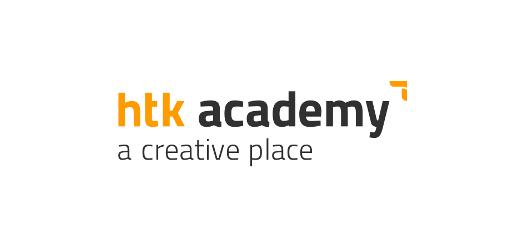
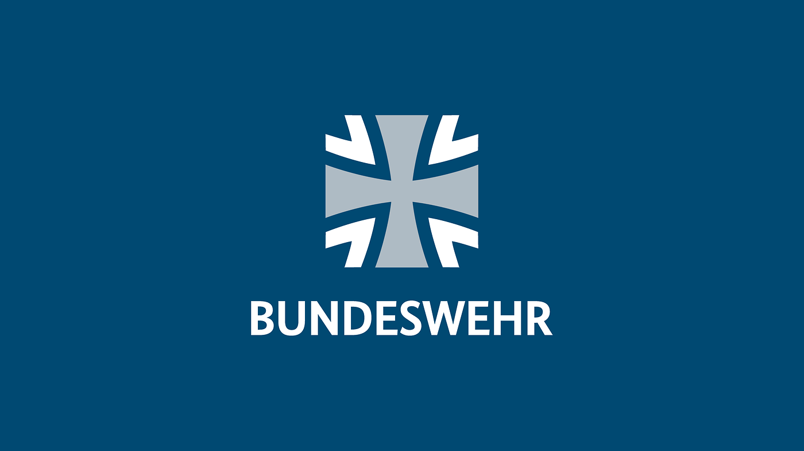
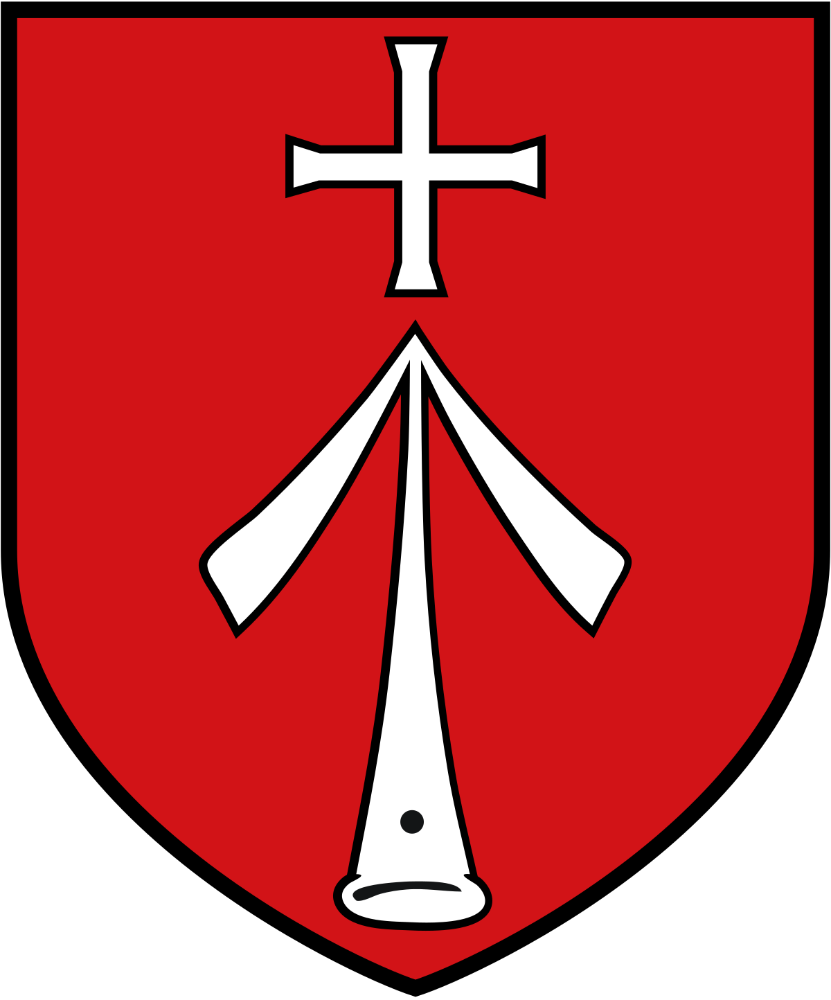

2024-2025
Derzeit absolviere ich am Digital Career Institute (DCI) in Berlin eine 14-monatige Weiterbildung in Webentwicklung. Im Rahmen der Ausbildung erlerne ich die Programmierung dynamischer Webseiten und Anwendungen unter Verwendung von Technologien wie HTML, CSS, JavaScript, React und Node.js. Zudem vertiefe ich mein Wissen in Bereichen wie Backend-Programmierung, Datenbanken und DevOps, um für eine zukunftssichere Karriere im IT-Bereich gerüstet zu sein.
2004-2021
Art Director | Grafikdesign für Printmedien
Langjährige Erfahrung in einem
vielseitigen Verlag
Meine Arbeit in diesem Verlag war ein zentraler Meilenstein meiner Karriere. In einem kleinen Team
war ich gefordert, meine autodidaktischen Fähigkeiten kontinuierlich auszubauen, da Spezialisten für
einzelne Bereiche kaum vorhanden waren. Neben klassischem Layout übernahm ich daher unter anderem
die Reinzeichnung, Fotografie (von Produktaufnahmen bis hin zur Eventfotografie) sowie diverse
IT-Tätigkeiten.
Anfangs lag der Fokus auf Kundenmagazinen im Luxussegment. Ab 2006 erweiterten sich die Aufgaben mit
der SAVOIR-VIVRE, einem Genuss- und Reisemagazin, das auch am Kiosk erhältlich war. Darüber hinaus
entwickelte ich komplette Produktlinien, einschließlich Corporate Identity, Verpackungsdesign und
verschiedenster Printprodukte.
Als Art Director leitete ich die Grafikabteilung und trug große Verantwortung für kreative und
strategische Entscheidungen sowie das Zeitmanagement. Nach 17 erfüllten Jahren entschied ich mich,
neue Herausforderungen anzunehmen und meinen beruflichen Horizont weiter auszubauen.
2000-2003
Student
In meinem Grafikdesign-Studium für Kommunikation und
Illustration setzte ich mich intensiv mit visueller Gestaltung auseinander. Ich lernte,
konzeptionell zu denken, starke Designs zu entwickeln und Botschaften visuell klar zu kommunizieren.
Der Fokus lag auf Typografie, Layout, Corporate Design, Illustration und digitaler Mediengestaltung.
Ich arbeitete mit verschiedenen Gestaltungsprogrammen, entwickelte Markenidentitäten und gestaltete
Print- sowie digitale Medien.
Im Bereich Illustration experimentierte ich mit verschiedenen Techniken – von Handzeichnung bis zur
digitalen Umsetzung. Kreative Konzepte und Storytelling spielten dabei eine große Rolle.
Neben praktischen Projekten beschäftigte ich mich mit Designtheorie, Wahrnehmungspsychologie und
Medientechnik. Durch regelmäßige Präsentationen und Feedbackrunden entwickelte ich meine
gestalterischen Fähigkeiten und mein Verständnis für visuelle Kommunikation kontinuierlich weiter.
1997-1998
Wehrdienst
Während meines 10-monatigen Wehrdienstes bei der
Bundeswehr war ich auf dem Fliegerhorst Laage beim Jagdgeschwader 73 „Steinhoff“ stationiert . Dort
hatte ich die Gelegenheit, für die Geschwaderzeitschrift zu arbeiten und ein großes Bühnenbild für
einen Offiziersball zu malen.
bis 1994
 Kind- und Schulzeit
Ich wuchs in der schönsten Stadt der Welt auf – Stralsund. Meine Kindheit in der DDR war geprägt von einem ganz eigenen Lebensgefühl, und die Wende brachte viele neue Möglichkeiten und Veränderungen, die ich bewusst miterlebte.
Meine Schulzeit schloss ich mit der Realschule ab – bereit, neue Wege zu gehen und meine kreative Leidenschaft weiterzuverfolgen.
2021-2024
Marketing Manager
Grafikdesign & Corporate Identity – Gestaltung für die Zukunft
Bei areto – einem BI-Beratungsunternehmen – war ich im
Marketingteam für die Gestaltung CI-konformer Kom-
munikationsmittel zuständig – von Print bis Digital.
Aufgaben:
Entwicklung
und
Pflege
der
Corporate
Identity für die gesamte Firmengruppe
Gestaltung
von
Eventgrafiken,
Präsenta-
tionen, Merchandising-Artikeln
Umsetzung von Designkonzepten für Print,
Digital & Social Media Gestaltung von Eventgrafiken,
Präsentationen, Merchandising-Artikeln
Umsetzung von Designkonzepten für Print,
Digital & Social Media
Unterstützung strategischer Markenent-
scheidungen durch visuelle Konzepte
2004
Junjor Grafiker
Als Junior-Grafiker in einer klassischen
Werbeagentur war
ich für die visuelle Umsetzung kreativer Konzepte zuständig. Ich gestaltete Anzeigen, Broschüren,
Flyer, Plakate und digitale Werbemittel und setzte Layouts gemäß Corporate Designs um.
Zu meinen Aufgaben gehörten außerdem Bildbearbeitung, Retusche und die Erstellung von
Reinzeichnungen. Ich bereitete Druckdaten auf und koordinierte mit Druckereien die Produktion.
Auch digitale Medien spielten eine Rolle – ich entwarf Banner, Newsletter und Social-Media-Grafiken
und optimierte sie für verschiedene Plattformen.
Durch regelmäßige Brainstormings und enge Zusammenarbeit mit dem Team entwickelte ich meine
gestalterischen Fähigkeiten kontinuierlich weiter.
1999-2000

Mediengestalter
Mein erster Job in der
Medienbranche war in Werbeagentur WP-Media auf Rügen, die sich auf Broschüren, Werbeprodukte für das
Hotel-
und Gastronomiegewerbe sowie Fahrzeugbeschriftung und Außenwerbung spezialisierte.
Hier sammelte ich wertvolle Erfahrungen im Layout, der Druckvorstufe und der Werbetechnik. Ich
gestaltete Broschüren, Speisekarten und Flyer, entwickelte Werbemittel wie Banner, Schilder und
Fahrzeugbeklebungen und setzte Corporate Designs für verschiedene Betriebe um.
Auch die Produktion und Umsetzung vor Ort gehörten zu meinen Aufgaben – von der Druckdatenerstellung
bis zur Montage von Werbeflächen. Diese vielseitige Arbeit bot mir einen umfassenden Einblick in die
Praxis der Werbetechnik und grafischen Gestaltung.
1994-1997
Ausbildung GTA
Ich absolvierte die Ausbildung zum Gestaltungstechnischen Assistenten (GTA) – Schwerpunkt
Grafik und Medien an einer Berufsfachschule. Während der Ausbildung erlernte ich die Grundlagen des
Grafikdesigns, Typografie, Layoutgestaltung sowie digitale und klassische Illustration.
Ein besonderer Fokus lag auf der Mediengestaltung für Print und digitale Anwendungen, einschließlich
Bildbearbeitung, Druckvorstufe und Corporate Design. Zudem erhielt ich eine fundierte Ausbildung in
Drucktechnik, Werbegestaltung und visueller Kommunikation. An derselben Schule war ich zudem Schüler
des Fachabiturs mit dem Schwerpunkt Gestaltung, wodurch ich mein theoretisches Wissen in Design und
Medien weiter vertiefen konnte.
1977

Geboren in eine spannende Zeit